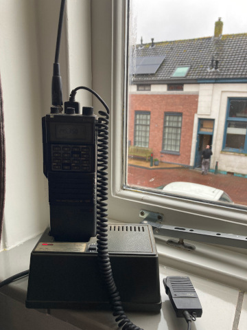

Thursday 29 feb 2024
Website
I edited this website to conform to the HTML5 standard and added a simplistic menu.
Icom IC-32E
 I found my old handheld in the attic.
It must be close to 30 years old and it looks it is still working. To my big surprise is the old battery still able to hold a charge, but I expect I have to replace is soon.
I hope to make a new 2m/70cm antenna in the future to replace this old rubber ducky.
Repeaters in the area
| band | call | tx freq | rx freq | location |
|---|---|---|---|---|
| 2 m | PI4RAZ | 145.750 MHz | 145.150 MHz | Zoetermeer |
| 70 cm | PI2NOS | 430.125 MHz | 431.725 MHz | Utrecht |
| 70 cm | PI2HGL | 430.350 MHz | 431.950 MHz | Den Haag |